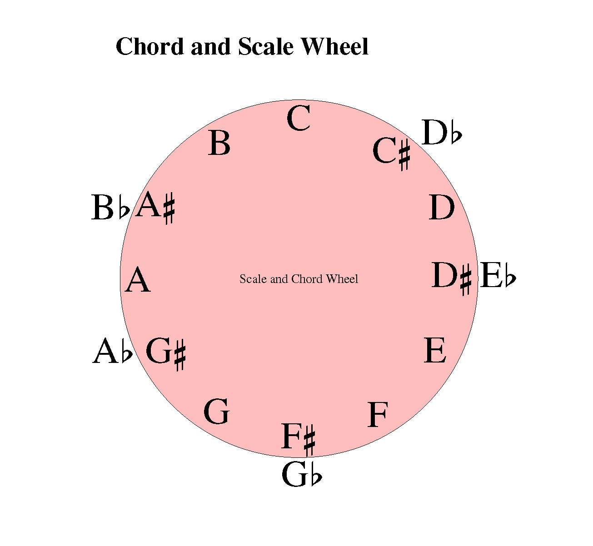
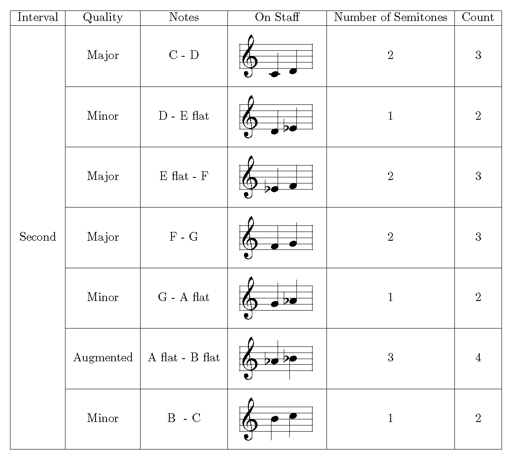
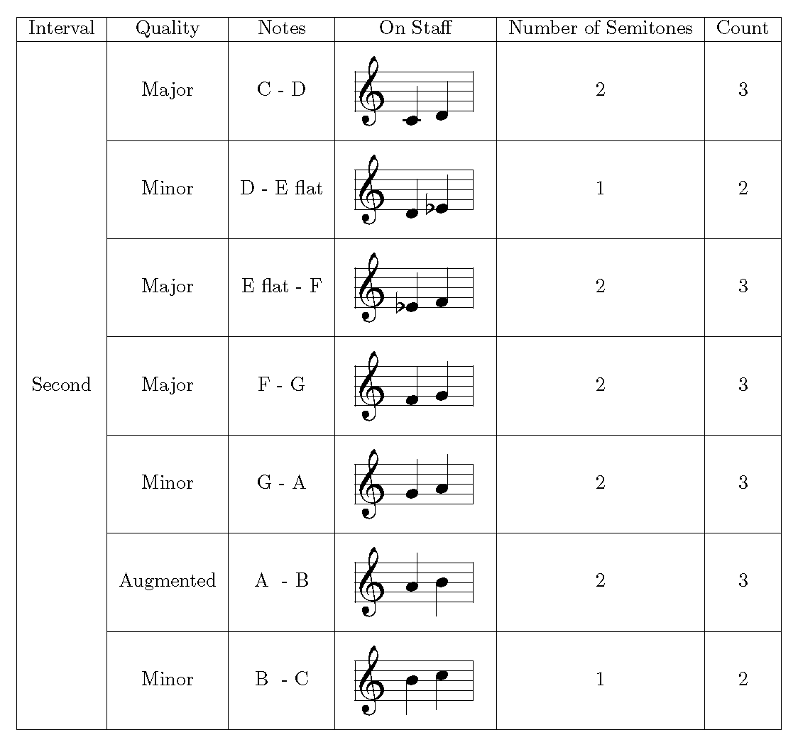
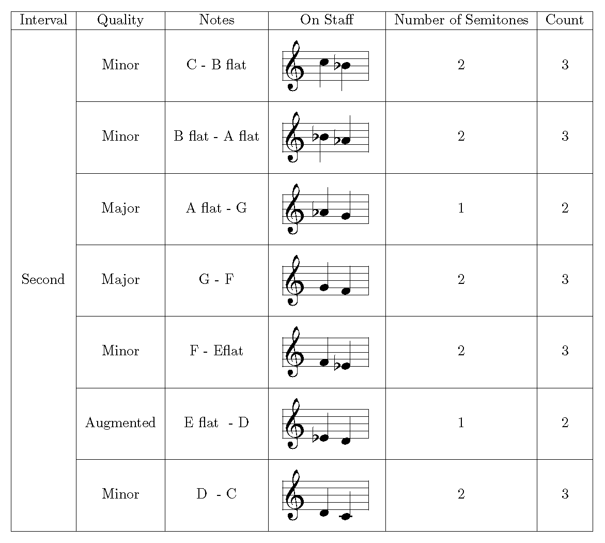

Section 3.3 Scale Construction
Arranging the chromatic scale in a a circular fashion can be useful in the construction of both chords and scales.
Take for example the scale of C Major. Looking at the interval pattern for a Major Scale we see it is given by a Major 2nd, a Major 2nd, a minor 2nd, a Major 2nd, a Major 2nd, a Major 2nd, a minor 2nd back to the Tonic. Using these intervals and starting on the Tonic C gives a scale of:
C,D,E,F,G,A,B back to C.
This is the scale of C Major (A scale with no sharp or flat notes i.e all white notes.)
The same approach can be applied to any tonic on the wheel and using the same interval structure will give the notes of that Tonics’ Major Scale.
eg;) Taking D as the Tonic would give: D, E, F♯, G, A, B, and C♯ which is the Scale of D Major.

The following figures show how each scale type is constructed and the intervals between notes in each scale type.
The Major Scale.


To get a count of 3 for C to D would be C:1, C♯:2 and D:3 and so on. A Major scale is defined by the type of interval between the different degrees of the scale with all Major Scales having the same Interval structure as shown here. Thus specific Major scales can be built using any note as a tonic and applying the same interval structure.
The Natural Minor Scale.


A Natural Minor Scale consists of the same notes as its relative major.
e.g;) The notes of the C major scale are C, D, E, F, G, A, and B.
The A Minor Natural scale is the Relative Minor of C Major. The A Minor Natural Scale uses these same notes, the sixth note of the major scale becoming the root note of the relative minor.
The notes of the A Minor Natural Scale are A, B, C, D, E, F, G and A.
The C Minor Natural notes are C, D, E♭, F, G, A♭, B♭ and C.
C Minor Natural is the Relative Minor of E♭Major. (See Circle of Fifths for all Scale relationships. (Figure 4.0.1)
The Harmonic Minor Scale.


The Melodic Minor Scale.


